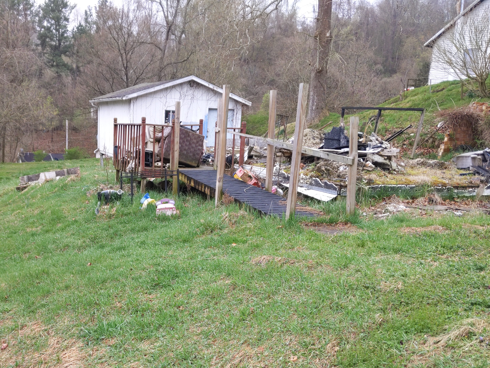
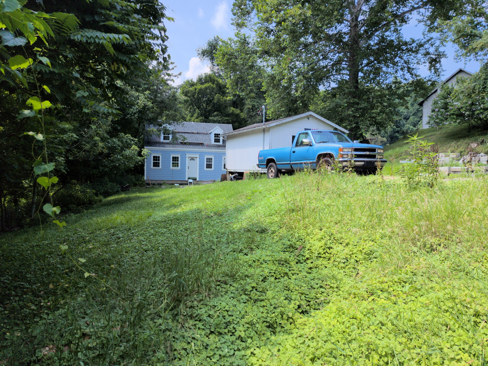
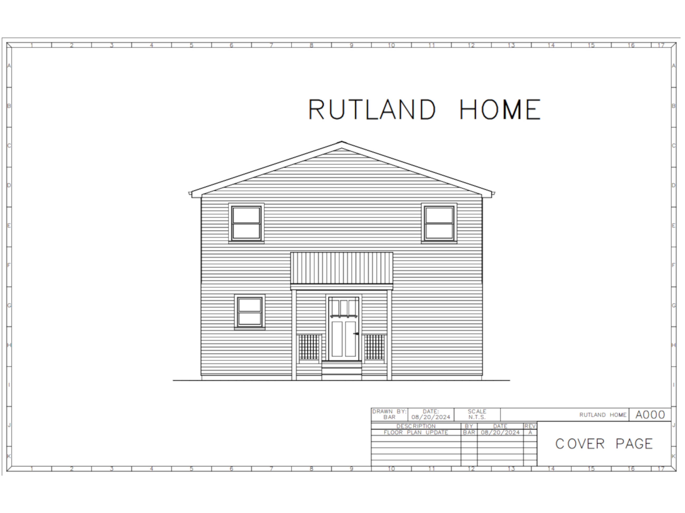
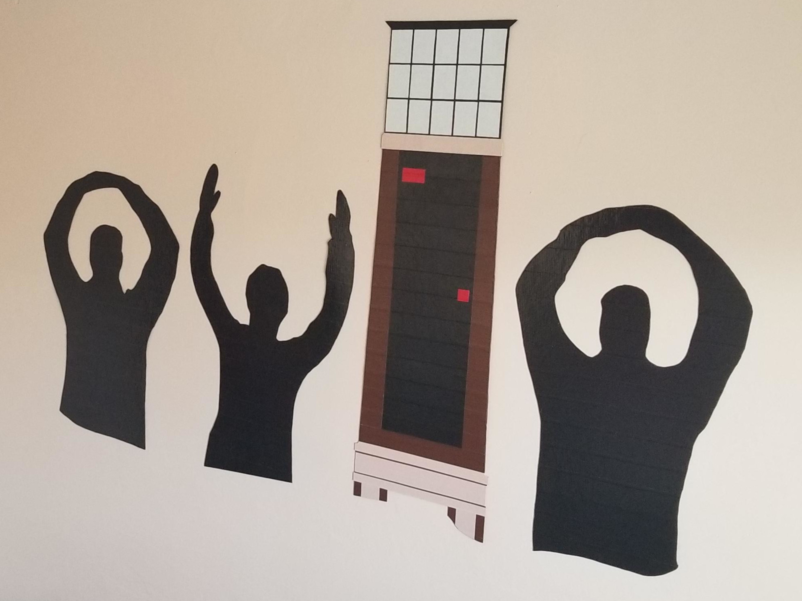
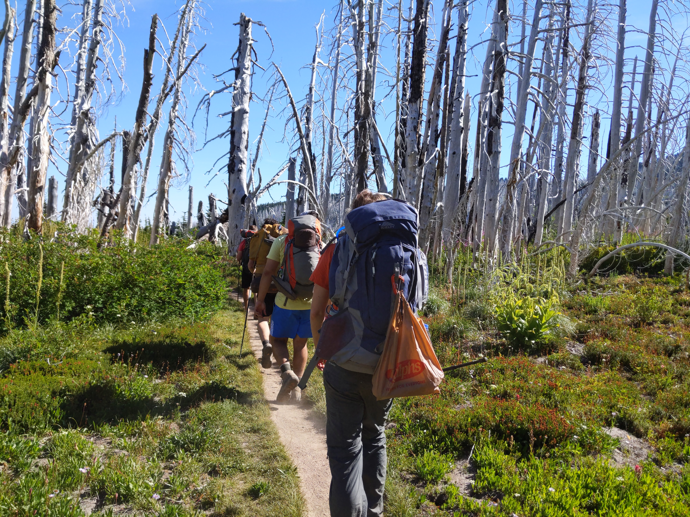
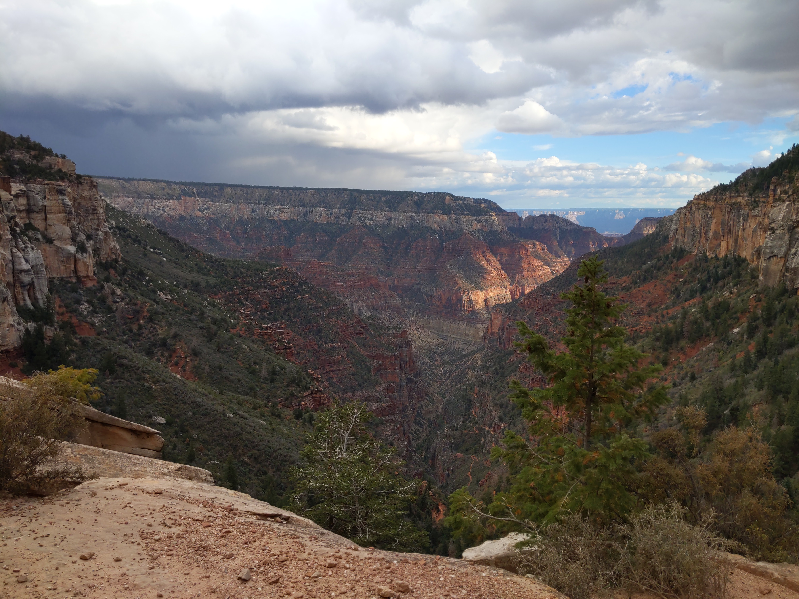
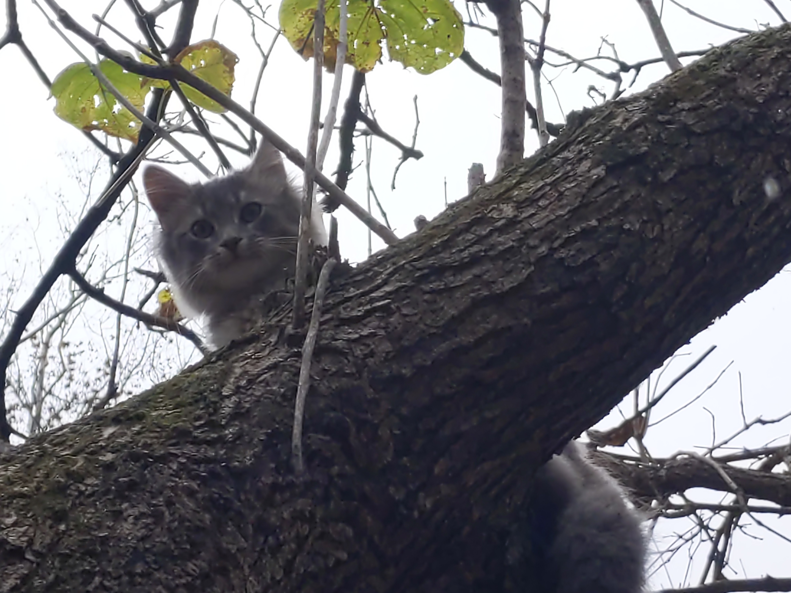
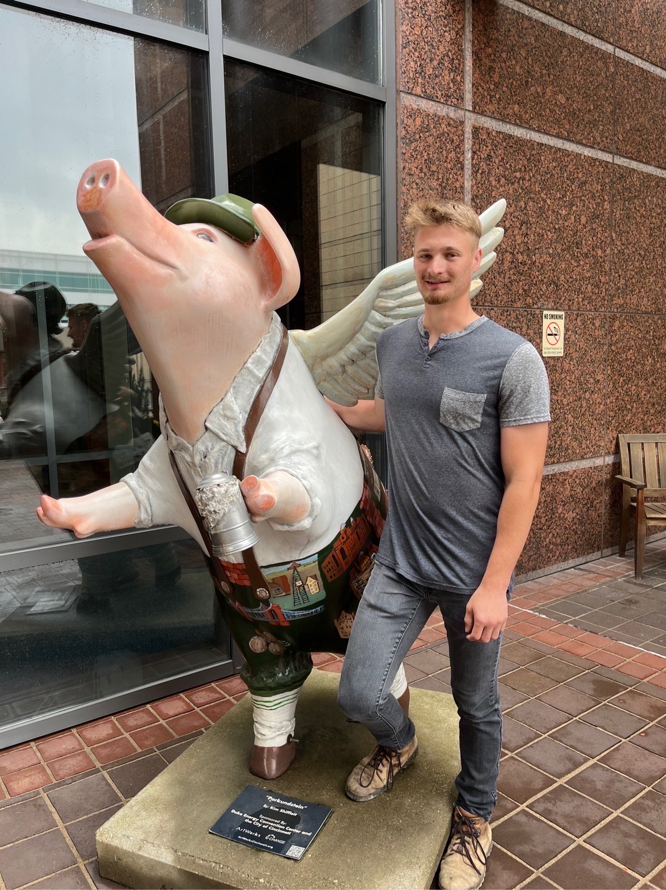

Bryce A Redmond
About Me
I am a 27 year old man who grew up in the Columbus suburbs but moved to Southeast Ohio several years ago. I graduated from The Ohio State University in 2021 with a Bachelors Degree in Mechanical Engineering. Throughout my time in college, I worked every weeknight as a Package Handler at the Columbus FedEx Ground hub. I enjoyed the job and for my final two semesters, I was promoted to an Operations Manager role, where I discovered my love of polo shirts and greatly improved my ability to be a part of and lead a team. It was during this time that I set my sights on someday building my own house, and I am now finally following through. From designing the home in AutoCAD and Revit, to building it with nail guns and circular saws, I have done everything on my own; with some help from my dad. You can see pictures and read about my progress here, and I've included some of my various other projects, as well.
My Cape Cod Home Build
In April of 2023, I found myself on the steps of the county courthouse for a tax sale. I was there for the first two properties, but after losing out on those and seeing no one bidding on the final property, I decided to take a chance. I didn't know what I was buying, but this is what awaited me. While others seemingly only saw problems, I realized the massive opportunity that had been gifted and decided to do something productive with it.
Where I Started

Where I am Now

My Projects
Since I was young, I have aspired to be creative and ambitious. My home build is of course my most ambitious project, but I've worked on many smaller creative endeavors, often as Christmas gifts. I have plenty of ideas of projects to add to this page.
Producing Building Plans for a New Home

Creating Artwork with Duct Tape

Hire Me - 5 Years at FedEx
I am a very ambitious worker. I am always looking to learn more and improve efficiency. While pursuing my Mechanical Engineering degree, I worked for FedEx loading packages, and I always felt my job as a package handler kept me focused and disciplined. Once I graduated and started in the engineering world, I became a bit disenfranchised with the career, as I was meant to be designing buildings, but I had never actually built anything before. I felt I needed to take a step back and approach engineering in a more hands on, ground floor manner, and this is what drove me to build my own home; as a result, I am a better engineer. I am now ready to step back into an engineering role, and like with construction, I feel that my 5 years of experience as a Package Handler and Operations Manager uniquely positions me as a great fit for engineering positions within FedEx.
Fun Times in the Smalls Area

Creating Job Aids for my Job at FedEx

More Photos
Extra photos from hiking trips, my cat, Dolphin, and other neat things.
Hiking Mt Hood

Hiking the Grand Canyon

My Cat Named Dolphin

Contact Me
This does not work currently, but I am working on it.
